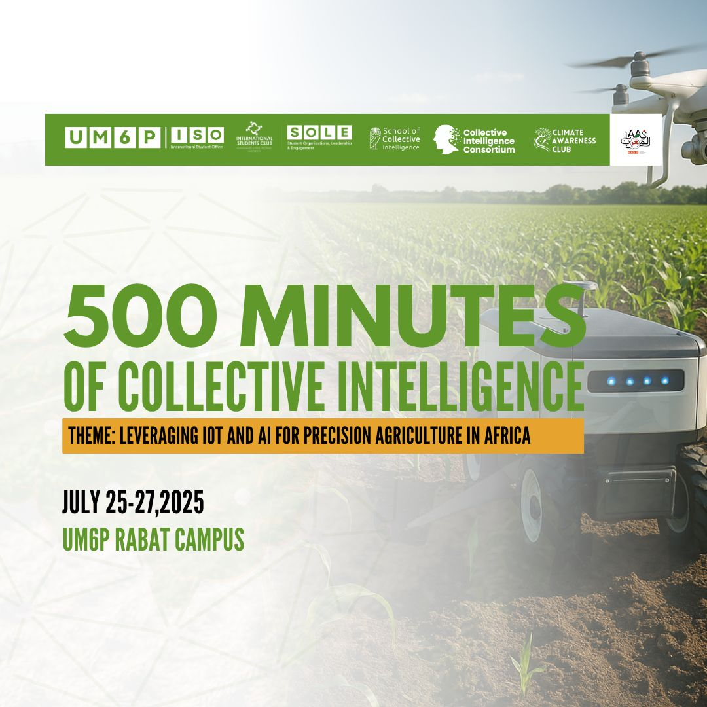
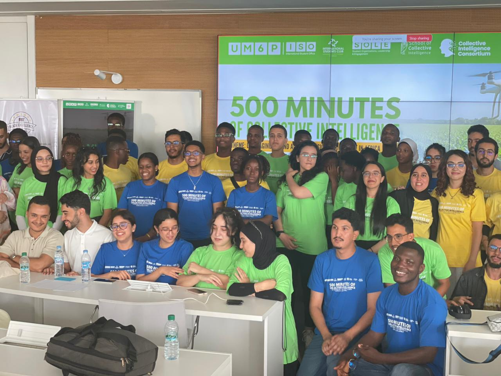
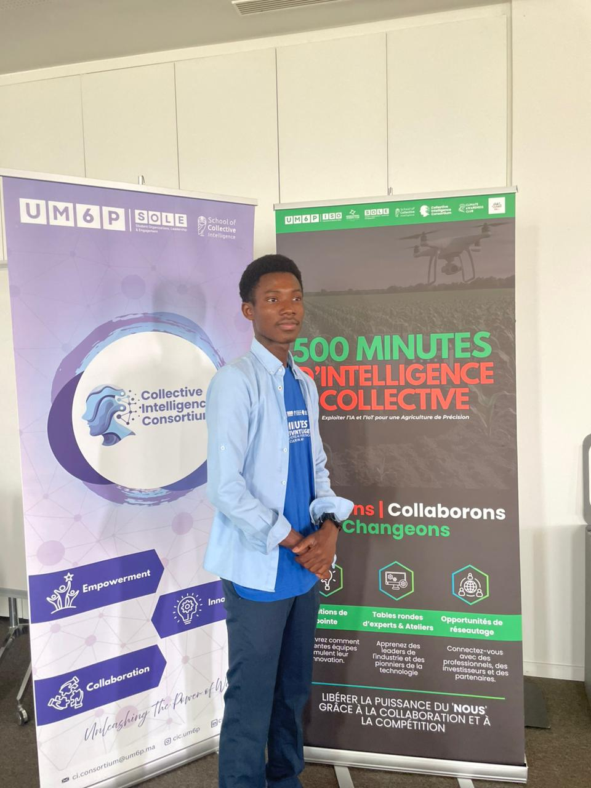

500 Minutes
4ème édition des 500 Minutes d'Intelligence Collective
Le Collective Intelligence Consortium a collaboré avec le ISC UM6P - International Students Club pour organiser cet événement à haut impact à UM6P Rabat. L'objectif était de résoudre des défis réels grâce à l'intelligence collective et la pensée interdisciplinaire.
Thème
Agriculture intelligente — Exploiter l'IoT et l'IA pour une agriculture de précision en Afrique
Participants
140 participants sélectionnés parmi 761 candidatures pour cette expérience d'apprentissage et d'innovation unique
Objectif
Explorer comment la technologie peut favoriser des pratiques agricoles durables sur le continent africain
Impact
Renforcer les systèmes alimentaires et autonomiser les agriculteurs grâce aux technologies intelligentes
Partenaires de l'événement
UM6P - International Student Office (ISO)
UM6P - Student Organizations, Leadership and Engagement (SOLE)
UM6P - Student Affairs (SA)
UM6P School of Collective Intelligence


